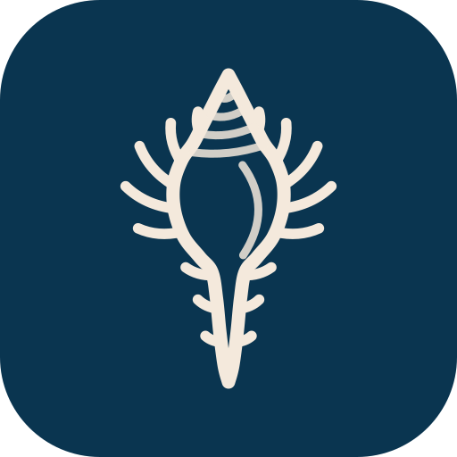
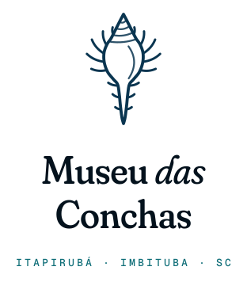

Curiosidade · 09
A concha que não é concha.
@museudasconchas
Identidade visualMuseu das Conchas · Itapirubá
O site do museu é um mergulho: quanto mais você rola, mais fundo vai, e a cor da água muda junto. No fim, a gente sobe de volta e chega à areia de Itapirubá. Este guia reúne tudo o que forma essa identidade, do logo ao movimento.
01 · CONCEITO
O slogan é do próprio museu, e o site leva a frase ao pé da letra: ninguém nunca viu o fundo do mar de perto, então o site desce até lá. A identidade nasce de duas ideias, a profundidade (o mar vai escurecendo e revelando coisas) e o múrex, a concha que já é a marca do museu.
Personalidade
Curioso, acolhedor e apaixonado.
Fala de ciência como quem mostra um tesouro para a família. Nunca soa como livro didático.
A metáfora
Uma descida e uma subida.
Desce da superfície ao abismo (onde estão os gigantes) e sobe "trazendo tudo à tona" até a praia, onde ficam o endereço e o contato.
O símbolo
O múrex.
A concha que o museu já usa como marca, redesenhada cheia, com espira em degraus, abertura vazada e espinhos curvados para cima.
02 · LOGO
O múrex é o símbolo do Museu das Conchas. Aqui ele é desenhado por código, cheio e em uma cor só, para ter presença: espira em degraus, corpo largo, abertura vazada, canal curto e espinhos grossos que curvam para cima. É também a família de caramujos que os fenícios usavam para tingir o roxo dos imperadores.

Construção

Meia silhueta espelhada em torno do eixo, sobre uma grade de 10 × 10. Os espinhos nascem perpendiculares ao contorno e giram para cima: longos no ombro, curtos no canal. Três suturas vazadas marcam os degraus da espira, e a abertura oval afina para dentro do canal.



Área de proteção
Deixe livre, em volta da assinatura, o espaço de uma câmara (a altura do "M" de Museu). Tamanho mínimo: símbolo com 16 px na tela ou 6 mm no impresso; assinatura horizontal com 120 px ou 30 mm de largura.
Versões
Nácar sobre o mar (padrão), azul-crepúsculo sobre areia (impressos claros e rodapé) e uma cor só (currentColor) para carimbos, gravação e bordado.
Não faça
Não distorça
Não troque as cores
Não gire
Sem efeitos nem fundos berrantes
03 · CORES
As cores de fundo são as zonas reais do oceano. No site, elas não são escolhidas por seção: a cor é calculada ao vivo pela profundidade em que você está.
Proporção de uso
A água domina. A areia é o único fundo claro (rodapé e impressos) e a cor dos botões principais. Bio e coral são pontuais: profundímetro, foco, selos "Brasil" e "Gigante".
Contraste (WCAG)
| Combinação | Razão | Uso |
|---|
04 · TIPOGRAFIA
Fraunces tem um eixo chamado SOFT que arredonda as pontas das letras, como pedra rolada pelo mar. Usamos sempre no máximo (SOFT 100). Geist faz o texto e Geist Mono, os dados de mergulho. As três são gratuitas no Google Fonts.
Fraunces · títulos e nomes
Aa
Geist · texto e interface
Aa
Pesos 300 a 600. Corpo de 17 px no computador e 16 px no celular, entrelinha 1,6.
Geist Mono · dados
−4.200
Profundidade, números de catálogo, rótulos. Sempre em caixa alta com espaçamento de 0,14 em.
Display
Fraunces 300 · 168 px
SOFT 100 · −2,5%
Um lugar como você nunca viu.
Título 2
Fraunces 300 · 104 px
Os gigantes.
Título 3
Fraunces 400 · 34 px
Cresce sem mudar de forma.
Nome científico
Fraunces itálico 400
Titanostrombus goliath Schröter, 1805
Destaque
Geist 400 · 23 px
Mais de 3.500 espécies de conchas de todos os oceanos.
Texto
Geist 400 · 17 px
O acervo reúne mais de 3.500 espécies de conchas do Brasil e do mundo, de todos os tamanhos e formas, todas catalogadas.
Rótulo
Geist Mono 500 · 12 px
−320 m · Zona do crepúsculo
Regra de ouro
Nome científico sempre em itálico (é a regra da biologia, e aqui vira estilo). Em títulos, só a palavra de destaque vai em itálico, com o brilho de nácar.
05 · ÍCONES
Grade de 24 px, traço de 1,5 px, cantos e pontas arredondados, sem preenchimento. Eles vivem no próprio site, num sprite SVG, e herdam a cor do texto.
06 · ILUSTRAÇÃO 3D
Cada concha do site é um modelo 3D gerado por código, a partir do mesmo modelo de crescimento em espiral que cientistas usam para estudar conchas. Dá para girar todas na ficha de cada espécie.
Como iluminar
Quando chegarem as fotos do acervo
07 · COMPONENTES
Todos são de verdade: passe o mouse, clique, use o teclado.
Botões
Areia é a ação principal (uma por tela). No hover, o nácar sobe de baixo como água enchendo o botão.
Filtros, selos e estado
Atalhos de WhatsApp
O site não guarda nada. Agendar, doar e tirar dúvidas abre o WhatsApp do museu; tour vai para o Google Maps; catálogo, para o Facebook.
Profundímetro
Fixo à direita. No celular vira uma pílula no canto. Mostra profundidade, zona, temperatura, pressão e luz.
08 · MOVIMENTO
Nada é seco ou mecânico: as coisas emergem, flutuam e são levadas pela correnteza. Clique nas caixas para repetir. Quem pede menos movimento no sistema recebe o site parado, sem perder conteúdo.
Emergir · textos
Sobe do fundo
Palavras sobem saindo do desfoque, uma a uma (55 ms entre elas).
Flutuar · conchas

Sobe e desce 9 px girando 6°, em 6 a 7 s. Cada concha começa num tempo diferente.
Bolhas · cursor
Clique aqui
O cursor solta bolhas ao se mover, e um clique solta um punhado.
Correnteza · faixas
Faixas correm devagar e param quando o mouse passa por cima.
Maré · curva padrão
Começa rápido e chega devagar, como uma onda que morre na areia.
Descida · página
0 m → −4.200 m → +2 m
A cor da água, a luz, as cáusticas e as partículas mudam com a profundidade da rolagem.
| Maré | cubic-bezier(.22, 1, .36, 1) | Entradas, revelações, hover · 0,6 a 1,3 s |
| Ressaca | cubic-bezier(.76, 0, .24, 1) | Menu, abertura da ficha, transições de tela · 0,8 a 0,9 s |
| Boia | cubic-bezier(.34, 1.56, .64, 1) | Pontos de anatomia, pequenos "pulos" · 0,4 s |
09 · VOZ E TOM
Frases curtas, perguntas que despertam curiosidade e números que impressionam. Ciência de verdade, contada como história. Na dúvida, escreva como se estivesse mostrando a concha para uma criança e para o avô dela ao mesmo tempo.
Uma concha que foi dinheiro.
A espécie Monetaria moneta possui relevância histórico-econômica.
Choveu? Melhor ainda: é um passeio coberto.
Ambiente climatizado e protegido de intempéries.
Na praia, a melhor lembrança é uma foto.
É proibido retirar conchas do ambiente natural.
10 · APLICAÇÕES
A identidade sai da tela: ingresso, etiqueta de acervo e posts. Os exemplos usam informações reais do museu, mas o layout é proposta.
Ingresso · família
Um lugar como você nunca viu.
Av. Atlântica, 2322 · Itapirubá · Imbituba SC
Nº
0427até 5
pessoas
Museu das Conchas · Itapirubá · Acervo
Titanostrombus goliath
Búzio-de-chapéu
Curiosidade · 09
A concha que não é concha.
11 · ARQUIVOS
Tudo está no repositório da Lumini, em projetos/museu-das-conchas/: os logos são SVG gerados a partir da fórmula, as conchas são WebP com fundo transparente e as cores estão no topo do css/site.css.

Logo verticalassets/logo/logo-vertical-areia.svg